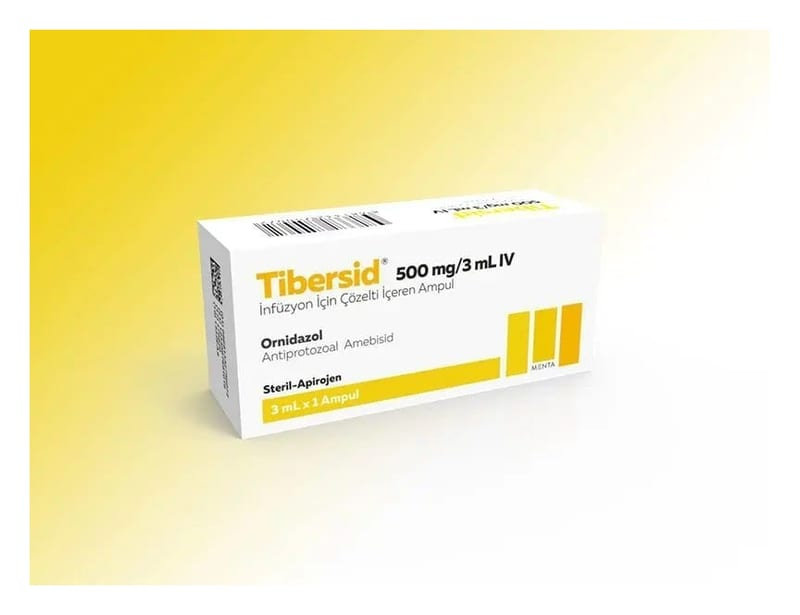

Tibersid 500 mg/3 ml IV İnfüzyon İçin Enjeksiyonluk Çözelti, 1 Ampul

Ne için kullanılır
KT · Bölüm 1TİBERSİD, ornidazol etkin maddesi içeren antibakteriyel (bakterilere karşı etkili) ve antiprotozoal (protozoonlara karşı etkili olan) bir ilaçtır. TİBERSİD, 3 ml çözelti içerisinde 500 mg ornidazol etkin maddesini içermektedir. TİBERSİD, 1 ampul içeren ambalajlarda sunulmaktadır. TİBERSİD, aşağıda belirtilen durumlarda kullanılır: • Çeşitli bakterilerin neden olduğu enfeksiyonlarda; septisemi (bakterilerin kana geçmesi sonucu ateş ve titremeye neden olan hastalık), menenjit (beyni saran zarın iltihabı), peritonit (karın zarı iltihabı), ameliyat sonrası yara enfeksiyonları, doğum sonrası septisemi, enfeksiyon nedeniyle meydana gelen düşük vakaları ve söz edilen bakterilerin ispatlandığı veya varlığından şüphelenilen endometrit (rahim içi zarında iltihap) vakalarında • Özellikle kalın bağırsak ve jinekolojik operasyon geçirecek vakalar olmak üzere cerrahi müdahalelerde koruma amacıyla
• Entamoeba histolytica isimli parazitin mide bağırsak sisteminde ya da bağırsak sistemi dışında yol açtığı enfeksiyonların tedavisinde